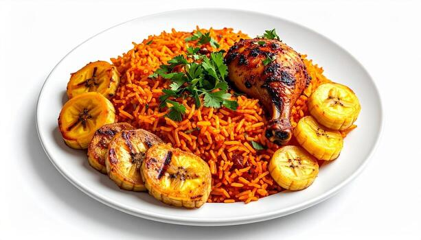

Jollof-Recipe
Home-Page

Description on Jollof-Rice
Jollof Rice is one of West Africa's most celebrated dishes, known for its vibrant red color, rich tomato flavor, and fragrant blend of spices.
The rice is cooked in a seasoned tomato and pepper sauce, allowing it to absorb all the flavors while remaining fluffy. It is often served with grilled chicken, fried plantains, beef, fish, or salad, making it a staple at family meals and celebrations.
Ingredients
- 2 cups long-grain parboiled rice
- 5 large tomatoes
- 1-2 onion
- 3 tbsp tomato paste
- 2 cups chicken stock
- 2 bay leaves
- 1 tsp thyme
- 1 tsp curry powder
- 1 tsp paprika
- 2 seasoning cubes
- Some Salt
Steps
- Blend tomatoes, bell peppers, scotch bonnet peppers, and half the onion until smooth.
- Heat vegetable oil in a large pot.
- Fry the remaining chopped onion until soft.
- Add tomato paste and fry for 3–5 minutes.
- Pour in the blended tomato mixture.
- Cook for 15–20 minutes until the sauce thickens and the oil begins to separate.
- Stir in garlic, ginger, thyme, curry powder, paprika, seasoning cubes, salt, and pepper.
- Add the chicken stock and bay leaves.
- Bring the mixture to a gentle boil.
- Wash the rice thoroughly and add it to the pot.
- Stir well to coat every grain.
- Cover the pot tightly with foil and then the lid to trap steam.
- Cook over low heat for 30–40 minutes.
- Stir occasionally and add a little hot water if necessary.
- Continue cooking until the rice is tender.
- Fluff with a fork before serving.